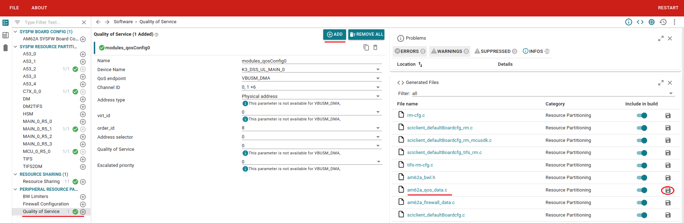
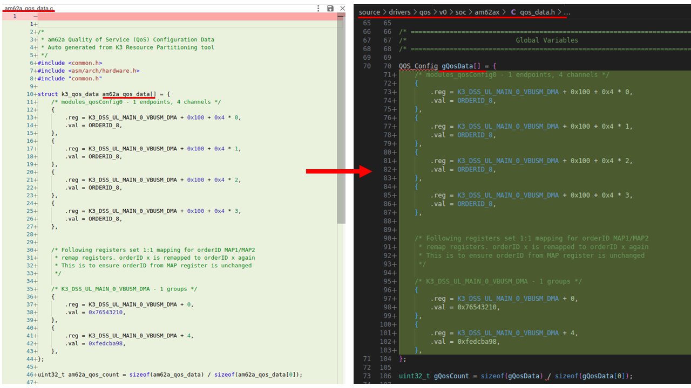
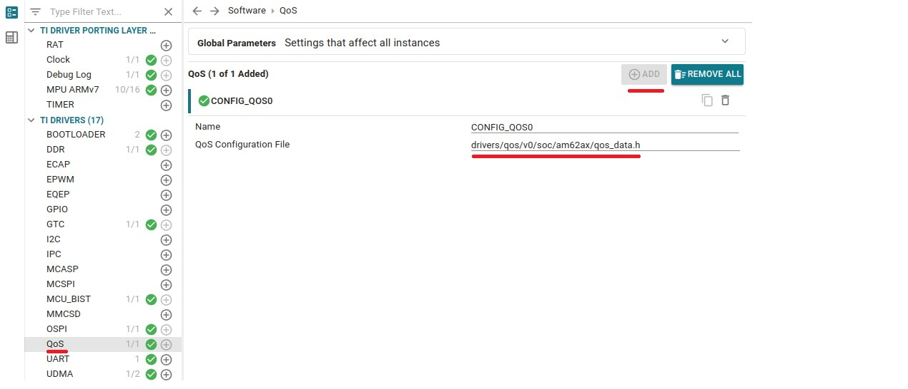

Majority of the initiator has a dedicated QoS block to provide the configurability of the transaction characteristic, such as orderID, priority/epriority, asel and etc. OrderID is a 4 bits value, which is associated with each transaction. By default, all the transactions have orderID value set to 0x0. The orderID is used as a mechanism to load balance the traffic to DDR through two parallel paths. The transactions with order ID 0-7 share one path, while transactions with 8-15 share a separate path. The OrderID value can be changed through QoS block for the initiators or through BCDMA and pktDMA configuration.
Each transaction in the system carries 3 bits priority information. The priority information is used for cbass for arbitration decision, which implements typical priority based round robin. Priority value 0x0 is the highest priority, while 0x7 is the lowest priority. By default, QoS has priority value set to 0x7( lowest priority).
Refer to the QoS programming guide in the SoC Technical Reference Manual(TRM) for more details.
Features Supported
- Setup the QoS with the given configuration data.
SysConfig Features
- Note
- It is strongly recommend to use SysConfig where it is available instead of using direct SW API calls. This will help simplify the SW application and also catch common mistakes early in the development cycle.
- Option to specify the QoS config generated using the "K3 Resource Partitioning" tool
Features not Supported
NA
Creating your own QoS config file
Step 1: Accessing the K3 Resource Partitioning Tool
The K3 Resource Partitioning Tool is used to generate QoS config files. The tool can be accessed online or locally.
Accessing the tool online
The K3 Resource Partitioning Tool, now also known as K3 Resource Configuration, is now available as a software product on the TI website, providing a unified user experience similar to other SysConfig-based tools, such as AM6X ClockTree and DDR Configuration Tools.
- Note
- The online version of the K3 Resource Partitioning Tool is now the preferred access method and will serve as the standard way to use the tool from this point forward.
To access the tool online, follow these steps:
- Launch the Tool: Navigate to https://dev.ti.com/sysconfig/?product=K3-RESOURCE-CONFIGURATION to access the K3 Resource Partitioning tool. If prompted, log in to your TI account to access the tool.

Resource Partitioning Tool Start Page
- Select Your Device: Choose the am62px device you are working with from the available options.

Selecting device inside the tool
- Select Baseline Design: Click on the Latest Baseline Design to launch the tool's interface and configure QoS on top of the latest baseline design for am62px devices. Alternatively, select a Processor SDK version-specific Baseline Design to start with a design compatible with that SDK release.

Resource Partitioning Tool
Accessing the tool locally
The tool is available in the ${SDK_INSALL_PATH}/tools/sysfw/boardcfg/k3-resource-partitioning directory.
To access the tool locally, follow these steps:
- Launch the Tool: Open the SysConfig tool GUI from the desktop shortcut and navigate to the k3-resource-partitioning tool path in the SDK.
- Select Your Device: Choose the am62px device from the available options.
- Select Baseline Design: Click on Latest Baseline Design to launch the tool's interface and configure QoS on top of the latest baseline design for am62px devices. Alternatively, select a Processor SDK version-specific Baseline Design to start with a design compatible with that SDK release.
Step 1: Generate a QoS config file
- Select "Quality of Service" under "Peripheral Resource Partitioning" from the left panel.
- Add the required number of QoS module instances and configure the parameters.
- Select a device, choose the endpoints, and select a list of channels for which QoS should be programmed.
- Note that it is possible to add multiple instances of QoS module with same device as long as the endpoints and channels do not overlap.
- The tool will generate a
am62px_qos_data.c file.

Configure the QoS
- The QoS data generated can to be replaced in the default qos_data.h file located in the
${SDK_INSALL_PATH}/source/drivers/qos/v0/soc/am62px/ directory.
- Copy the contents of the
am62px_qos_data structure in the am62px_qos_data.c file and replace it in the gQosData structure of the qos_data.h file.
- Or you can create a new copy of qos_data.h file and replace in it.

Copy the QoS data
- Save the generated
am62px_qos_data.c in your project workspace or work area if required.
Step 2: Add the generated QoS config file to your project

Add QoS via SysConfig
- If you have created a new qos_data.h file, specify the path to your file including the filename in the sysconfig text box as shown above
- Make sure to use forward slash "/" in the file path so that this will work with linux as well as windows build
- Make sure that path to this is file set in your application include path, as needed.
- Save the sysconfig project and build your application
Important Usage Guidelines
- Priority, orderID and asel value from the QoS block shall only be modified as part of the initialization steps, when the SoC is idle.
- Changing the QoS block configuration during the run time is prohibited and may cause system error or other undefined behavior. Hence it is recommended to do the QoS configuration in the bootloader(SBL).
Example Usage
Include the below file to access the APIs
#include "drivers/qos/v0/soc/qos_data.h"
QoS initialization example
API
APIs for QoS
 1.8.20
1.8.20